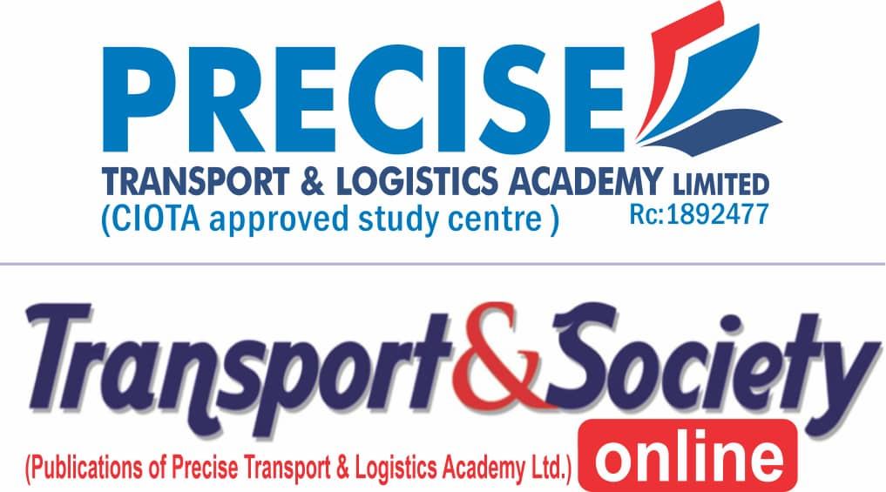

Learn about our mission, vision, and commitment to excellence in transport and logistics education
Precise Transport and Logistics Academy Nigeria Limited (RC 1892477) was incorporated by
the Corporate Affairs Commission (CAC) on the 11 th February 2022 with its core business
mandates to include the provision of transport and logistics consultancy services as it relates to
training and capacity building, cargo consolidation and freighting, cargo trucking, fleet
procurement and management, maritime logistics, railway and aviation services, transportation
and traffic engineering, research and development, Intelligent transport, eco-friendly/sustainable
transport, supply chain management etc..
Precise Transport and Logistics Academy Nigeria Limited has a cordial working
relationship/collaboration as either training provider or study center with the 2 notable transport
professional bodies in Nigeria namely; Chartered Institute of Logistics and Transport (CILT) and
the Chartered Institute of Transport Administration of Nigeria (CIOTA). By the above
collaboration, we are empowered to embark on the education and training of prospective students
that will lead to their professional registration/certification and progression along the different
grades of the institutes.
The professional examination levels available to prospective students/participants include;
- Foundation Certificate, divided into 2 parts.
- Professional Diploma Examination – divided into 2 parts
- Professional Advance Diploma – divided into 2 parts
- Industrial Attachment/Internship
- Postgraduate Professional Diploma – Final examination
- Professional Research Project.
The Categories of professional membership available to interested students/persons include;
- Student/Graduate
- Associate
- Full member
- Fellow.
Transport and logistics related graduates from our academy are qualified to register and sit for the
professional examinations of the above 2 institutes and when successful can progress along the
institute’s grades. Our academy can also professionally render support and assistance towards the
required progression in the membership grades.
THE ADVANTAGES OF ATTENDING OUR ACADEMY
- Increased productivity and operational efficiency
- Improved employers’ satisfaction, labor retention and less recruitment process (i.e. less
employee turnover)
- Reduced costs through elimination of errors and accidents
- Enhanced customer service delivery and company reputation
- Competitive edge to attract top talents and businesses
- Higher employee retention and engagement.
- Increased innovation and ability to leverage new technologies.
- Enhanced health, safety and environment (HSE)
Our programs are designed to equip students/participants with the practical skills and
theoretical knowledge needed to navigate and excel in this dynamic and competitive
industry. We offer a comprehensive learning experience that prepares our graduates for
successful careers in various sectors of the transport and logistics sector. Whether starting
your career or you are seeking to advance your knowledge in transport and logistics field,
Precise Transport and Logistics Academy offers the right programs to help you achieve
your professional goal.
To be the leading management consultant in the provision of safe, efficient, reliable, equitable, environmentally friendly and sustainable transport and logistics services/systems. Also to be a leading provider of transport education and training in Nigeria equipping individuals and organisations with the knowledge, skills and best practices necessary for safe and efficient mobility.
To contribute towards building a Nigeria where transportation contributes immensely to its economic growth, social well-being and environmental sustainability through a skilled and responsible workforce.
At Precise Transport and Logistics Academy Nig Ltd, we are commitment to excellence and a passion for shaping the future of the transport and logistics industry, Precise Academy stands out as a leading institution in providing top-notch training programs.
We strive for the highest standards in education and training.
We conduct our operations with honesty and transparency.
We work together with industry partners to ensure relevance.
We continuously improve our programs and teaching methods.
Graduates
Years of Experience
Industry Partners
Employment Rate